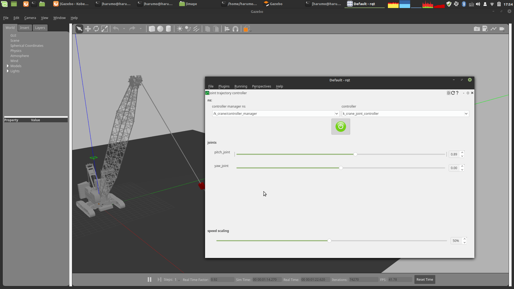

Gazebo
This document describes how to use gazebo, a physics simulation.
The crane in this simulator is equipped with an inertial sensor and a camera. These can be used from within the program.
Crane can be controlled by using k_crane_controle in combination with this package.
The crane can be controlled from time to time in the program, or the trajectory can be generated in advance and then executed.
Tutorial
How to launch the simulator
- A bare simulator with no sensors installed
roslaunch k_crane_gazebo k_crane_gazebo.launch
- Simulator equipped with camera, suspended load, and sensor
roslaunch k_crane_gazebo k_crane_with_payload.launch
When adding a sensor such as a camera, refer to k_crane_description/robots/k_crane_with_payload.urdf.xacro.

Transition to initial state
rosrun k_crane_control intial_state
A program that moves the crane to the specified initial state (turning angle, undulating angle). Since the two angles have been directly written in the program, you need to compile each time you change them.
Stop shaking
Program group that forcibly stops the sway of the rope
- joint12 (may nonsense)
rosrun k_crane_control initial_joint12
- joint23 (may nonsense)
rosrun k_crane_control initial_joint23
- joint 4 (may nonsense)
rosrun k_crane_control initial_joint4
Move the crane manually

With gazebo started, start rqt to start the control board.
rqt
Set up the plugin.
Plugins -> Robot Tools -> joint trajectory controller
Set controller manager ns to /k_crane/controller_manager and controller to k_crane_controller.
After setting, press the power button icon in the center and when it turns green, move the slide bar left and right to move the crane.
Get camera image

After performing Move the crane manually, you can acquire images from the camera installed on the crane by selecting Visulalization-> Image View from Plugins of rqt and selecting /front_camera/image_raw topic. This camera can be set by changing the xacro file.
Shake experimentally
- Move to initial state
rosrun k_crane_control intial_state
- Tilt the rope only 6 degrees
rosrun k_crane_control initial_joint_boom_pi
- Send Sano-sensei's vibration control trajectory (The trajectory seems to be tentative and does not work)
rosrun k_crane_control sano_joint_trajectory_action
- Press the play button at the bottom of gazebo to start the simulator and send the damping trajectory
Tools
- suspend gazebo from within the program
rosrun k_crane_control pause_gazebo
- Resuming a suspended gazebo from within the program
rosrun k_crane_control pause_gazebo
- Convert velocity orbit to position orbit
rosrun k_crane_control integral
Program to integrate velocity command into position command
The csv file to be integrated is specified in the program.
It is also necessary to specify the initial position in the program.
The sampling period is specified in the program and is currently 100Hz.
Tips
-
base.urdf.xacro
Elements inside the inertia tag cannot contain negative values. All must be positive values. Otherwise, the robot will sink instead of colliding with the ground. In addition, the crane has a large mass and normally becomes 0 except for the diagonal components of the inertia tensor, but if it is 0, the behavior becomes strange. Therefore, it was set to 100.